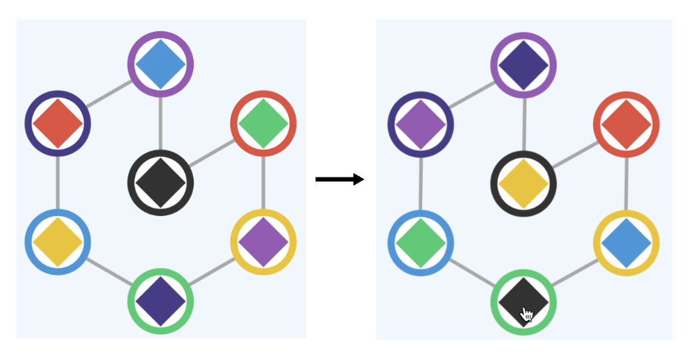

７色の四角が、それぞれ７つの円の中にいます。タップできるのは、この７つの円です。
四角の色が変化する操作と、変化しない操作があります。把握しておきましょう。
Q．まずはクリア条件を考えましょう。（ヒント：円も７色です。）
クリア条件は、７つの円のそれぞれに、同じ色の四角が入ること、です。
中央の円を押しても、四角の色は変わりませんが、それ以外の円を押すと、四角の色は変わります。色がかわるというよりは、７つの四角の配置が変わる、と理解したほうが良いです。
では、配置が変わるルールを突き止めていきます。
Q．中央以外の円を押したとき、押した円にはどの色の四角が入りますか？
中央以外の円を押したとき、押した円には、中央にあった色の四角が入ることがわかります。
他の色はどのように配置替えするのでしょうか？
ヒントとなるのは、円どうしをつなぐ線です。四角の配置が変わるルールは、この線が関係していると見てよいでしょう。それも、操作のたびにくるくる回りますが、円をタップして四角の配置が変わるまでは動かないので、回転後の線ではなく、回転前の線と、四角の配置変化の関係を考えるとよいでしょう。
円をタップすると、その時の線の状態（円のつながり方）に基づいた配置換えが起こり、そのあと線の状態が変わる、ということです。
例えば、最初の状態で、下の円を押したときの変化を見てみましょう。
四角の色を、黒から線をたどっていくと、どちらも黒→緑→紫→紺→黄→赤→青です。線がこのあと回転しますが、回転する前は、このようにつながり方が一致しているのですね。
ルールをまとめると…
・中央にある四角が、タップした円に移動する。
・他の四角は、線でつながりあった状態を保つ。すなわち、すべての四角は、線上を同じ数だけ進む。
・その後、線が回転して、つながり方が変わる。
ということになります。
「この色を中央に持ってきたい」と思ったときに押すべき場所をマスターしましょう。
できるようになったら、特定の３つを順番に並べる練習をしましょう。例えば赤、黄、緑を並べたい場合、赤を中央にし、中央を何度か押して赤と黄色がつながるようにします。次に緑を中央にし、中央を何度か押して黄色の後につながるようにすれば良いですね。
そうして黒以外のつながるべき色がおおよそつながれば、クリアのチャンスはやってきます。
解けない方は、下の解答をご覧ください。
解答を見たい方はこちら↓
解答を見る